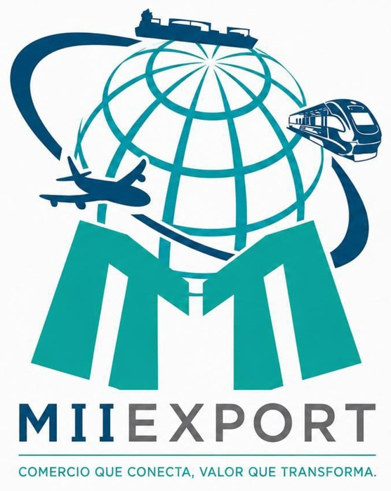

Infraestructura y suministro
Experiencia vinculada con materiales pétreos, balasto, durmientes, tornillería, refacciones y soluciones para proyectos ferroviarios, junto con evaluación de calidad, logística y cadenas de suministro.

RENATA MACHUCALIDERAZGO · ESTRATEGIA · CONEXIÓN · IMPACTO
CEO y Fundadora de MIIEXPORT S. de R.L. de C.V.
Integro visión empresarial, jurídica, económica y financiera para estructurar oportunidades, construir alianzas y generar valor en proyectos de infraestructura, movilidad, comercio internacional y desarrollo regional.
“Conecto personas, regiones y mercados para generar valor que transforma.”
PERFIL PROFESIONAL
Renata Machuca es empresaria, abogada y estratega con más de una década de experiencia en los sectores público y privado. Su trayectoria integra desarrollo de negocios, comercio internacional, gestión jurídica, economía y finanzas, con un enfoque creciente en infraestructura y sistemas ferroviarios.
Desde MIIEXPORT impulsa oportunidades que articulan proveedores, instituciones y proyectos, con una visión orientada a competitividad, sostenibilidad, conectividad y desarrollo regional.
ESPECIALIZACIÓN Y DESARROLLO PROFESIONAL
Una visión que combina negocio, regulación, infraestructura, suministro, sostenibilidad y comprensión técnica del ciclo de vida de los activos ferroviarios.
Experiencia vinculada con materiales pétreos, balasto, durmientes, tornillería, refacciones y soluciones para proyectos ferroviarios, junto con evaluación de calidad, logística y cadenas de suministro.
Formación especializada en sistemas ferroviarios con perspectiva de sostenibilidad, gobernanza y desarrollo regional, aplicada a estructuración de proyectos, alianzas y competitividad territorial.
Próxima participación en Seminario Ferroviario sobre corrosión, recubrimientos protectores, inspección, Ensayos No Destructivos (END), sistemas de freno, mantenimiento de infraestructura, tecnologías de medición y análisis de fallas.
TRAYECTORIA Y ÁREAS DE IMPACTO
Desarrollo de oportunidades, suministro de materiales y componentes, análisis de calidad, logística y participación en iniciativas vinculadas con Metro CDMX, Tren Maya y Corredor Interoceánico.
Importación, exportación, negociación, coordinación logística, cumplimiento y desarrollo de mercados, integrando visión comercial con criterios jurídicos y financieros.
Desarrollo de negocios, proveeduría, licitaciones, vinculación institucional y estructuración de soluciones para proyectos públicos y privados.
Comercialización y exportación de productos agroalimentarios, creación de cadenas de valor y evaluación de oportunidades en mercados internacionales.
FORMACIÓN ACADÉMICA
PROPÓSITO PROFESIONAL
Impulsar proyectos que conecten personas, regiones y mercados, generando prosperidad compartida mediante soluciones innovadoras, éticas y sostenibles.
CONTACTO PROFESIONAL